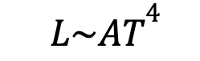
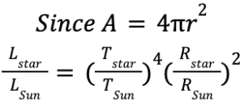
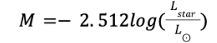
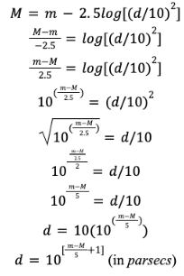

Now we know not only how to calculate the luminosity of a star, but
also its temperature. For the sake of our star 51 Pegasi, we have
calculated a luminosity of about 1.36 solar luminosities, and a
temperature of about 5700K. All of this seems like we are dealing with
a star that is very similar to our Sun.
So now the question arises, assuming that we have done these calculations
for all known stars and not just 51 Pegasi, are these two quantities
related? And can this relationship provide leads to perhaps finding out
more? Well the first clue to astronomers that they are related came in
the 19th century, when the Stephan Boltzmann law was developed
from experimental findings and derivations. It stated a clear
relationship between the temperature, luminosity, and surface area of a
star:

This means, that since the quantities are proportional, that:

The relation makes perfect sense, since the hotter a star is, the more
luminous it will be, and the larger it is, still the more luminous it
will be due to the larger surface area. As seen, having our units
relative to the Sun, we can exactly relate temperature (which we know)
and luminosity (which we also know) to radius, which is something very
important to find out (more in the radius section). This is very
exciting, but there is more!
More than ever therefore, scientists now knew that there was a clear
relationship between temperature, size, and luminosity and were therefore
curious whether the two quantities that could be calculated (like we
showed), could be graphed as a sort of universal diagram for all stars.
Through Python Matplotlib coding, I was able to compare the B-V magnitude
(representing temperature) and the luminosity (solar) of about 120,000
stars in a dataset to investigate. The results of my findings
(figure 4) align perfectly with the revolutionary findings of
Ejnar Hertzsprung and Henry Norris Russel in 1911.
The findings of this diagram are revolutionary, since they show that
there is a very clear relationship between the luminosity and the
temperature of a star. This relationship on the diagram is marked by the
white line. It is very important that this relationship is present for
main sequence stars, since this has just found a solution to the problem
of not being able to measure the distance and therefore the absolute
brightness and luminosity of a star that is farther than a few hundred
parsecs away. At these distances, the parallax is too small and therefore
the parallax method for distance is out of the question. However, we have
seen that there is a relationship between the colour or temperature and
the luminosity for stable stars, meaning that the luminosity, even if
parallax cannot be measured, can be estimated farely well from the
temperature for main sequence stable stars!
Being able to estimate the luminosity from the temperature will then
allow the calculation of the distance. First, the luminosity can be
converted into absolute magnitude, using the same luminosity-magnitude
relation used before, but this time for the absolute magnitude from the
change in relative luminosity, and not the apparent magnitude from the
change in relative brightness:

Knowing the absolute magnitude, all that we need to do is rearrange the
absolute - apparent magnitude conversion that we have derived earlier,
this time solving for distance. This is the second stepping stone in
cosmic distance ladder that we have already talked about:

There is another very important finding that this HR diagram introduces,
and that is a new dimension to the entire classification system of stars.
We see that not all stars are in the main sequence correlation, and
there are many, labeled Giants and Supergiants, that are too luminous for
their corresponding temperatures. Applying the Stephan Boltzmann law, we
can imply that this is only possible if the other parameter, or the
surface area of these stars was much larger than that of the main
sequence stars. This is why we know that these groups are giant stars.
The fact that they span all of the temperature ranges but are very large
has led to the development of theories concerning the life cycles of
stars. In fact, astronomers believe that the size of the giant stars
is only possible because the balance between the mass (or inward pulling
gravity) and luminosity (or outward emitted energy and radiation from
the fusion in the star) in a main sequence star is knocked out of
balance, and there is more outward energy than inward gravity. This
causes the expansion of the star to much larger areas, and could be
caused by the fact that it runs out of Hydrogen fuel, and begins to burn
heavier elements, which result in stronger reactions. In fact, we can
see from the spectra of these giant stars that Hydrogen is almost
nonexistent, and very heavy elements, such as Tin oxide,
Zinc oxide, and Carbon can be found.
Other than these giant stars, we see a group labeled White Dwarfs, who
are much hotter than they should be for their size. This again, implying
from the Stephan Boltzmann law, means that these stars must have very
small areas. Again, this fits in well with the development of stellar
life theories, since when a giant star absolutely runs out of all fuel,
then the balance must tip in the other direction, and with no more
outward emission, or gravity to hold the star together, the outer core
is shed and all that is left is a Carbon, very dense core, that must
evidently be very small. In fact, Carbon is the most common element in
White dwarf spectra. It is theorized that after billions of years, very
slowly, these super dense and hot White dwarfs also cool down to Red and
then Brown dwarfs, in a trend also seen on figure 4 as their
range extends towards the bottom right corner of the diagram.
Using the Stephan-Boltzmann law, the radii of all these stars can
actually be calculated, and therefore can be also graphed, to visually
prove the conclusions that were just constructed (figure 5).
As seen clearly from figure 5, it is only the stable main
sequence stars that keep almost a constant area, with only a small
increase of size towards the hotter zones.
Due to all of this information that has been discovered from this HR
diagram, it made sense that the spectral type that was already
established needed to be extended for a new dimension. This dimension
was known as the luminosity class. This now created a two dimensional
classification system, that could now be thought of as a map, where the
box that a specific star resides in corresponds to one spectral and one
luminosity class, like coordinates. The luminosity classes were
established as roman numerals: V for main sequence like the Sun, IV for
Subgiants, III for Giants, II and I for supergiants. Notice that
increasing luminosity also corresponds to the different classes of stars
in their life cycle. It should be noted that red supergiants and blue
supergiants are often distinguished from each other, and this small
split can even be seen on figure 5. This could be a consequence
of significant differences in composition, but this should further be
investigated. Giants are mostly red (since blue stars already generally
have a giant size, even in the main sequence). Dwarfs form a completely
different category (D or VI and VII).
Therefore, since the Sun is a main sequence star, we can think of its
full classification now as G2V. For 51 Pegasi, we have also established
that its spectral type was G2, like the Sun, but its luminosity is
significantly higher than the Sun, even though its temperature is equal
or even a little less. This leaves us to imply that its area (from the
Stephan Boltzmann law), must again be greater, and therefore this could
mean that 51 Pegasi is approaching Sungiant phase (luminosity class IV).
Overall, scientists are split on whether 51 Pegasi should finally be
classified G2V or G2IV. However, since it is approaching the end of its
Hydrogen reserves, most place it as G2IV.